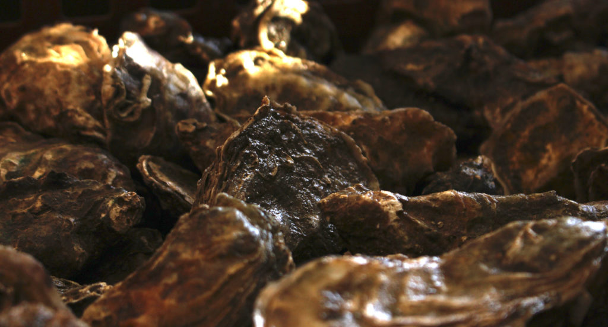
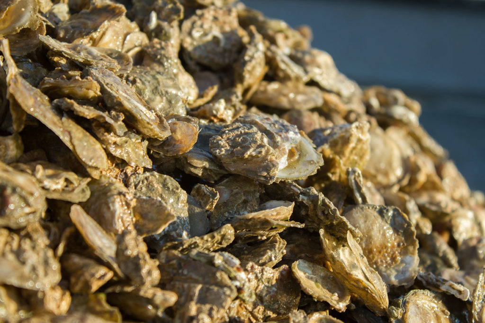

L’huître est un mollusque bivalve appartenant à la famille des ostréidés. Sa coquille est composée de 2 parties rattachées par un muscle. Si l’extérieur est feuilleté d’écailles gris-vert, l’intérieur est recouvert de nacre blanche et mauve. Le mollusque repose dans la partie inférieure et concave de cet écrin, attaché par un pied ; sa chair luisante est teintée de blanc grisâtre, virant au gris perle, au vert ou au beige.
Sous l’Antiquité, l’huître était appréciée et consommée en abondance par les Romains, les Celtes, ainsi que par les Grecs, qui se servaient de la partie plate de la coquille comme bulletin de vote. Ils y gravaient le nom de l’homme politique à bannir de la cité ; d’où l’origine du mot « ostracisme ».
À l’état sauvage (en voie d’extinction), le mollusque hermaphrodite se fixe sur les rochers, sur les autres huîtres ou sur tout objet pouvant l’accueillir, formant ainsi des colonies. L’huître indigène originelle est l’huître plate (Ostrea edulis), mais sa production est devenue très marginale (la belon, issue de Bretagne, est la plus appréciée de cette famille). L’huître portugaise l’a supplantée en 1868 lors de son arrivée dans l’estuaire de la Gironde. Mais après une épizootie dans les années 1970, c’est l’huître japonaise qui fut importée et qui représente aujourd’hui la majeure partie de la production française d’huîtres creuses (Crassostrea gigas).
La plupart des huîtres sont élevées dans des parcs, nécessitant un important travail manuel (mise en poches, retournement des poches, tri…). Les naissains (ou larves) provenant de bassins spécialisés (Arcachon notamment), sont ensuite élevés pendant 3 ans dans des bassins plus propices à leur développement. Ce sont ces bassins qui donneront leur nom aux huîtres : Marennes-Oléron, de Normandie (Ouest Cotentin, isigny, saint-vaast…), de Bretagne (cancale), d’Arcachon, de Vendée, de Méditerranée (étang de Thau, bouzigues), de Corse…
Il est de coutume de les déguster pendant les mois en « r » -de septembre à avril. Le reste de l’année, elles sont dites « laiteuses » (ou grasses), car elles produisent de la laitance: une semence blanchâtre et crémeuse qui fait grimacer bon nombre d’amateurs, préférant les déguster en saison -pile au moment des fêtes!
Ou « huître des 4 saisons ». C’est une variété d’huîtres qui a subi une manipulation chromosomique (mais pas une modification, comme les OGM) : elle possède 3 paires de chromosomes au lieu de 2. Elle a été obtenue en laboratoire par l’Ifremer afin de répondre aux demandes estivales. Stérile, l’huître triploïde ne produit plus de laitance et comme elle ne s’épuise pas à se reproduire, elle grossit et est commercialisée plus rapidement (2 ans, au lieu de 3 en moyenne). Certains ostréiculteurs traditionnels résistent à cette offensive triploïde.
Inversement proportionnel à la taille, le calibre indique le poids moyen de l’huître : n° 5 (30 à 45 g), n° 4 (46 à 65 g), n° 3 (66 à 85 g), n° 2 (86 à 110 g), n° 1 (111 à 150 g), n° 0 (+ de 150 g, soit la taille d’un steak !). Les « spéciales » sont plus charnues, les « fines de claires » sont plus minces et souvent vertes, du fait de la présence d’une algue dans les bassins (claires) où elles sont affinées.
L’huître est étroitement dépendante de la qualité de son écosystème, soumis à rude épreuve (pollutions d’origines diverses, réchauffement des eaux…). Depuis 1995, une épidémie frappe les huîtres juvéniles (jusqu’à 18 mois), provoquant une surmortalité qui met à mal la filière ostréicole et provoque une hausse du prix des bourriches.
L’huître est un aliment-santé hors pair, contenant un taux record de nutriments : protéines, sels minéraux (iode, zinc, sélénium, manganèse, 2 fois plus de fer que la viande), etc. Et tout cela pour un minimum de calories : 2 à 3 % de matière grasse ! Les huîtres se conservent au frigo une semaine après achat, bien serrées et coque en bas. Elles s’ouvrent au dernier moment (une heure avant la consommation), avec un bon couteau et une main protégée!
Dans son plus simple appareil, c’est ce que vous diront les adeptes. Bien fraîche mais pas glacée. Pour les néophytes, quelques artifices (filet de citron, vinaigre à l’échalote ou simple tour de moulin à poivre) permettent d’habituer le palais à cette saveur maritime, qui se prête aussi à de nombreuses recettes, crues ou cuites.